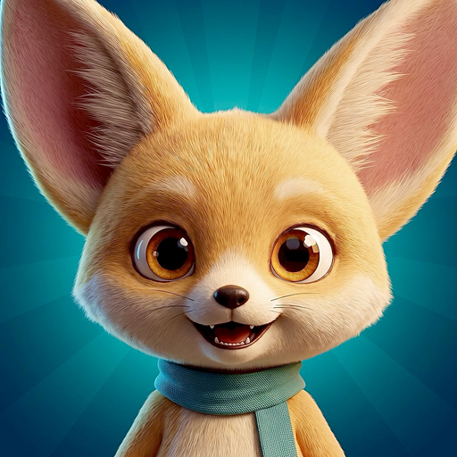

Virtual pet · iPhone & iPad
A tiny fennec fox with enormous ears, a teal scarf, and a talent for getting hungry at the worst possible moment. Feed him, play with him, keep him clean, let him nap.
Biscuit Pet is a small, offline virtual pet made by an independent developer. Short visits are the point: thirty seconds on the bus is enough to feed him, tidy up and get back to your day.